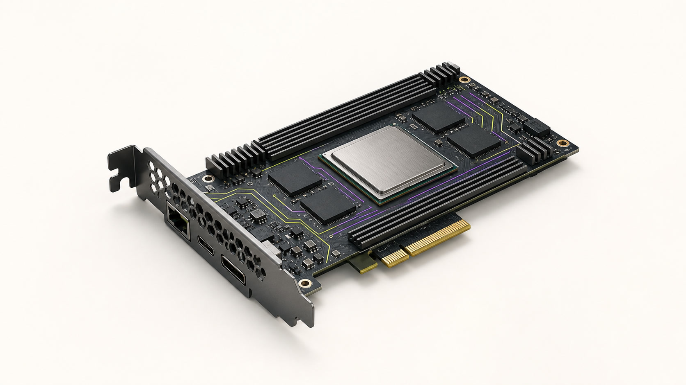
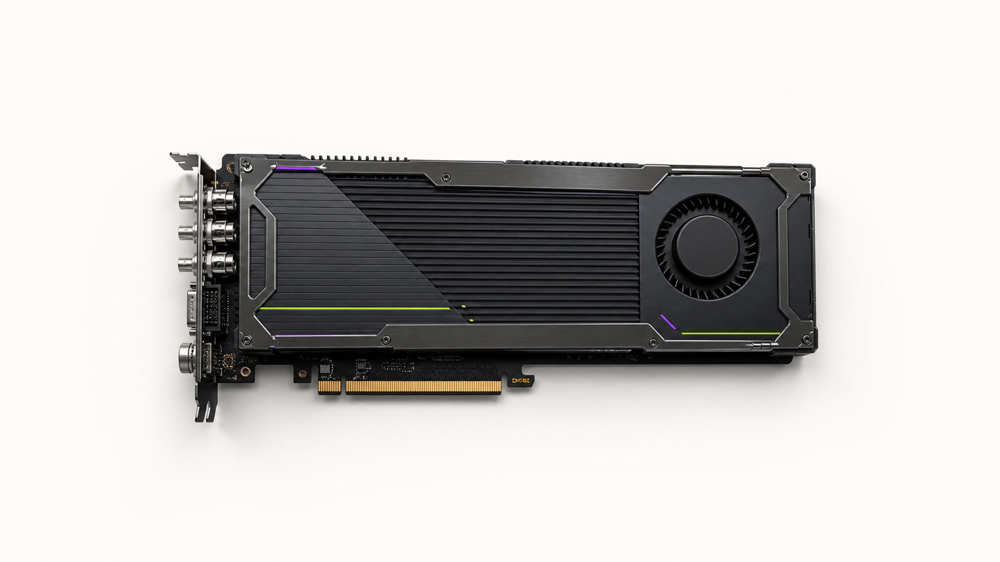

EMBEDDED / 15 W CLASS
SPARK S20
M.2 紧凑模组，为机器人、相机与智能终端提供低功耗本地推理。
EDGE AI PROCESSOR
在低功耗边缘设备上运行实时 AI。

SPARK MODULES
M.2 紧凑模组，为机器人、相机与智能终端提供低功耗本地推理。

低矮型 PCIe 模组，面向嵌入式服务器、工业视觉和多模型流水线。

带主动散热和工业接口的高性能边缘卡，为多路相机与机器人服务器持续运行而设计。
COMPARE SPARK MODELS
| 规划维度 | SPARK S20 | SPARK S40 | SPARK S80 |
|---|---|---|---|
| 产品形态 | M.2 模组 | 低矮型 PCIe 卡 | 工业级 PCIe 卡 |
| 相对计算规模 | 1× 基准 | 约 2× S20 | 约 4× S20 |
| 目标内存 | 8 GB | 16 GB | 32 GB |
| 主机接口 | PCIe 4.0 ×4 | PCIe 4.0 ×8 | PCIe 5.0 ×8 |
| 目标功耗 | 不高于 15 W | 不高于 35 W | 不高于 75 W |
| 散热形态 | 被动散热 | 被动 / 主动可选 | 主动散热 |
| 目标部署 | 相机、机器人、终端 | 嵌入式主机、工业视觉 | 多路视觉、边缘服务器 |
规划目标可能随芯片、板级、接口、环境与可靠性验证结果调整。
设计视角
减少网络往返和云端依赖。
面向受限空间和持续运行场景。
复用 HOLYFLOW 的模型转换和调优资产。
每一次合作都连接架构、软件、验证与生产运营。
合作路径
FAQ
机器人、机器视觉、工业检测、智能终端等需要低延迟本地决策的场景。
本地推理是核心设计目标，联网方式取决于具体系统方案。
从模型、传感器、接口、功耗和环境约束清单开始联合评估。
选择你的阅读视角
技术评估框架
| 设计维度 | 关注问题 | 建议验证方式 |
|---|---|---|
| 推理核心 | 如何在功耗预算内满足实时任务 | 以目标模型测试延迟、吞吐和持续负载 |
| 片上资源 | 模型和中间数据如何高效驻留 | 分析工作集、复用与外部存储压力 |
| 视频与传感器路径 | 数据如何从输入快速到达模型 | 验证接口、预处理、同步和端到端延迟 |
| 系统软件 | 如何安全启动、更新和恢复 | 检查镜像、版本、回滚与设备生命周期 |
| 环境适应 | 如何面对温度、振动和持续运行 | 依据目标行业标准制定验证计划 |
| 云边协同 | 模型如何训练、发布和回传状态 | 验证模型版本、灰度更新和遥测策略 |
工作负载地图
分类、检测、分割、OCR 与质量分析。
感知、定位、路径与控制相关推理。
预测维护、异常识别和现场决策。
在受限功耗和网络条件下运行本地 AI。
采用与部署路径
完成传感器、模型和软件的早期集成。
验证板级、热、可靠性和系统性能。
规划烧录、设备身份、升级、监控和售后。
生产运营关注点
健康检查、故障隔离、恢复与长时间验证。
启动、身份、访问、更新与数据边界规划。
把模型行为与系统状态连接起来的遥测。
版本、兼容、回滚、维护和支持。
资源与状态
本网站提供产品方向、架构原则、工作负载与评估框架。
工作负载定义、环境要求、成功指标和测试计划。
规格、兼容矩阵、SDK、文档、发布说明与模型验证状态将按成熟度开放。
在机器人、视觉终端与工业设备中实现快速、稳定的本地推理。
模型可在 NOVA 与 SPARK 之间迁移，缩短从数据中心验证到边缘量产的路径。
准备好开始了吗？